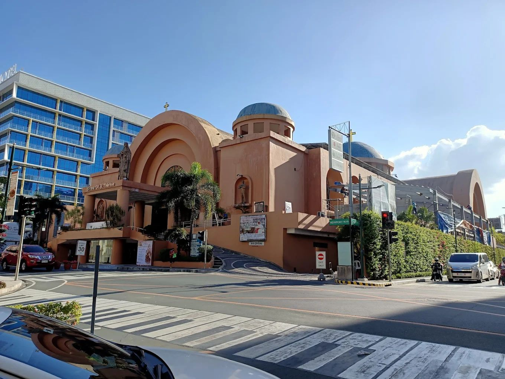
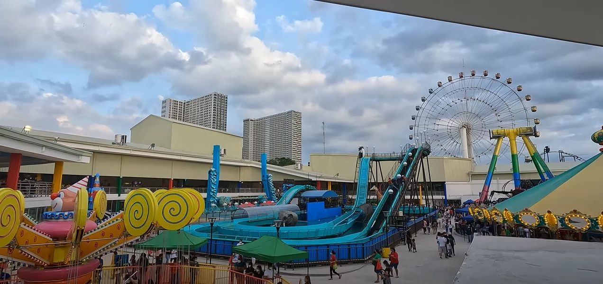
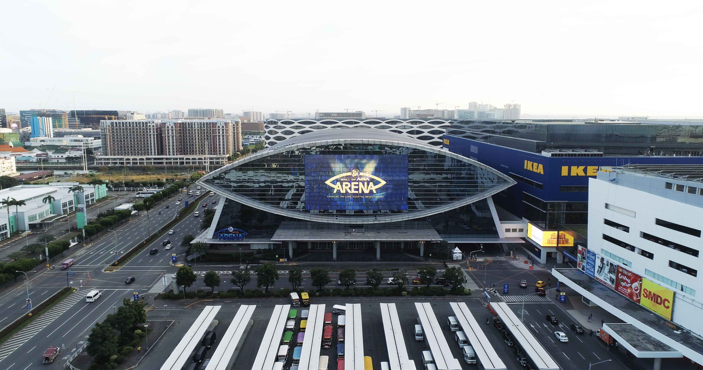
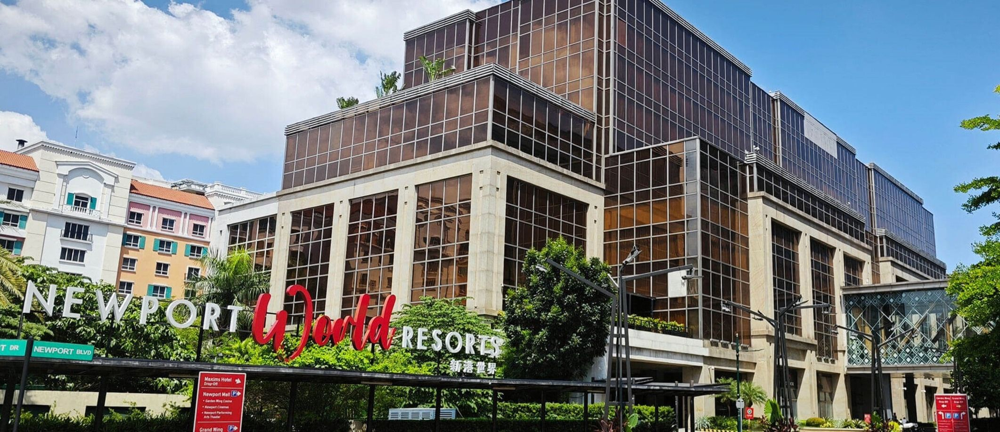
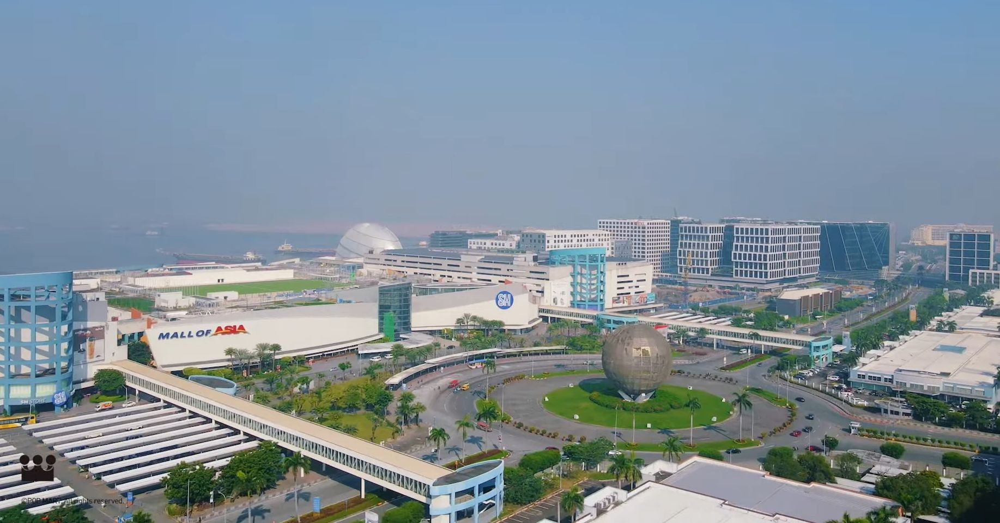
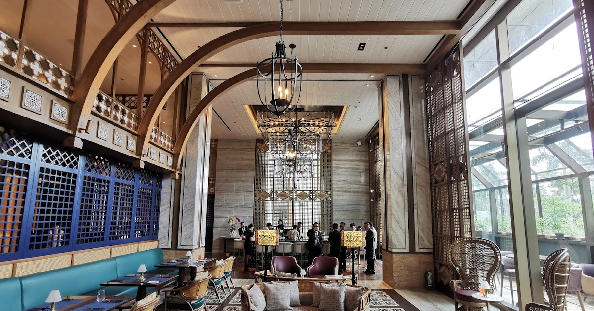
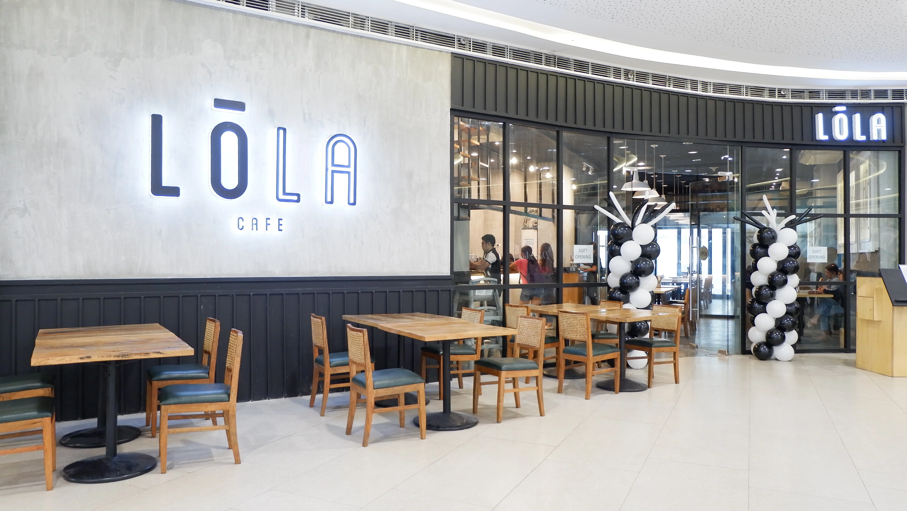
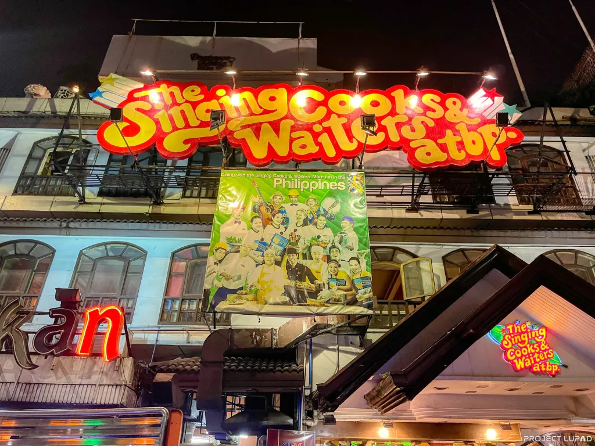
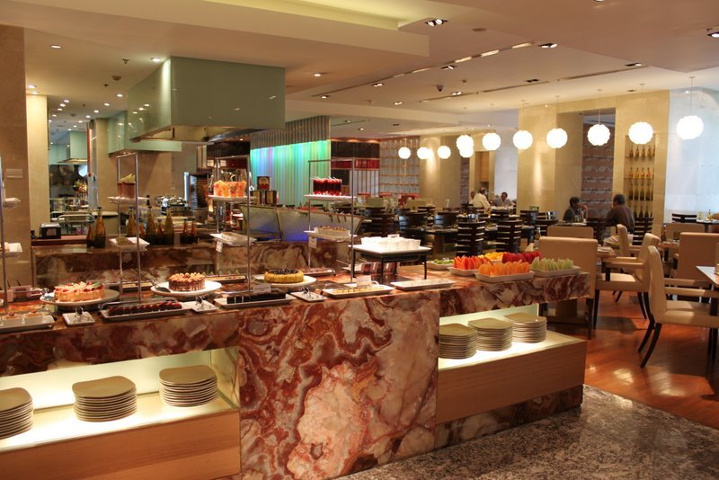
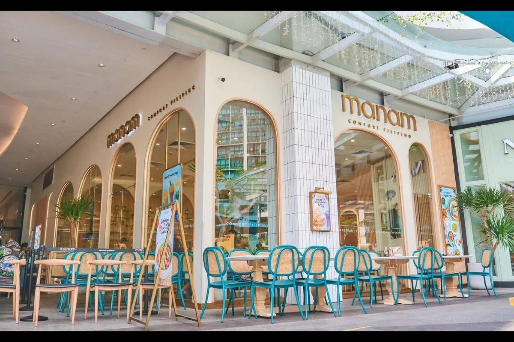

Pasay City offers a mix of entertainment, culture, and leisure. The Mall of Asia (MOA) Complex is a top destination, featuring shopping, dining, and a scenic view of Manila Bay. The Cultural Center of the Philippines (CCP) showcases Filipino arts through performances and exhibits. Star City provides thrilling rides and family-friendly attractions, while Manila Ocean Park offers an interactive marine experience. For a fun and Instagram-worthy visit, The Dessert Museum features dessert-themed rooms with sweet treats.





Pasay City boasts a diverse food scene. Dampa Seaside Market offers fresh seafood cooked to order, while Vikings Luxury Buffet serves a grand selection of international and local dishes. Café Adriatico is known for its classic Filipino-Spanish cuisine. Sweet lovers can enjoy oversized treats at Randy’s Donuts, while House of Wagyu Stone Grill serves premium Wagyu steaks cooked on a sizzling hot stone.





Welcome to Pasay City, one of Metro Manila’s most vibrant and historic cities! Known as the “Gateway to the Philippines,” Pasay is home to world-class entertainment, business hubs, and cultural landmarks. Located along Manila Bay, the city offers a dynamic mix of modern attractions and historical sites, making it a key destination for both locals and tourists.
Phone number
+63 912 345 6789 (Mobile)
+63 2 1234 5678 (Landline)
Social Media
https://www.facebook.com/legenddal